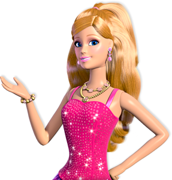

What You Need To Know
Discover the Extraordinary World of Barbie: Unveiling Her Background and Family!
Welcome to the captivating universe of Barbie, where dreams come true and adventures await at every turn! As we delve into the enchanting story of Barbie, let's explore the heartwarming background and her cherished family.
Barbie's Beginnings
Barbie, an iconic fashion doll created by Mattel, made her debut on March 9, 1959. Ruth Handler, the visionary co-founder of Mattel, was inspired to design a doll that encouraged imaginative play and empowered young minds. Barbie quickly became a symbol of aspiration, creativity, and limitless possibilities for children worldwide.
Meet the Family
-

- Barbie Roberts: The radiant and ever-stylish Barbie is a reflection of every young girl's dreams. She is a compassionate, intelligent, and confident individual who fearlessly chases her dreams, inspiring generations to believe in themselves.
- Ken Carson: Barbie's dashing companion, Ken, is the quintessential all-American boy-next-door. With his infectious smile and kind heart, he complements Barbie perfectly, sharing in her adventures and supporting her in every way.
- Skipper Roberts: Barbie's beloved younger sister, Skipper, is a fun-loving and spirited character. She's a true confidante to Barbie, and together, they navigate the joys and challenges of sisterhood.
- Stacie Roberts: The second youngest sister in the Roberts family, Stacie, brings her own spark to the mix. With her curiosity and wit, she adds a delightful element to the sibling dynamics.
- Chelsea Roberts: The youngest and most imaginative member of the family, Chelsea, embraces the wonders of childhood with wide-eyed enthusiasm. Her creativity and innocent charm make her a cherished part of Barbie's world.
Barbie's universe is also enriched by a diverse group of friends and pets who bring joy, laughter, and valuable life lessons to her journey.
A World of Imagination
Barbie's world is not just about fashion and glamour; it is a realm of limitless creativity and imagination. Through her various careers, adventures, and endeavors, Barbie showcases the importance of embracing one's passions and pursuing them fearlessly.
Join us on a captivating exploration of Barbie's world – where dreams become reality and family bonds create a strong foundation for endless possibilities. Let Barbie's story inspire you to dream big, believe in yourself, and celebrate the magic of family and friendship!
Experience the Phenomenon
The Barbie legacy continues to thrive, touching hearts across generations. Explore the exciting Barbie merchandise, captivating movies, and engaging content that continue to spread joy and inspire young minds worldwide.
Discover the incredible journey of Barbie and her extraordinary family – a journey that has left an indelible mark on the hearts of millions. Unleash your imagination and let Barbie show you that anything is possible when you embrace the power of dreams!